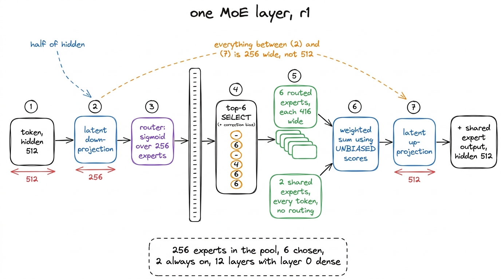
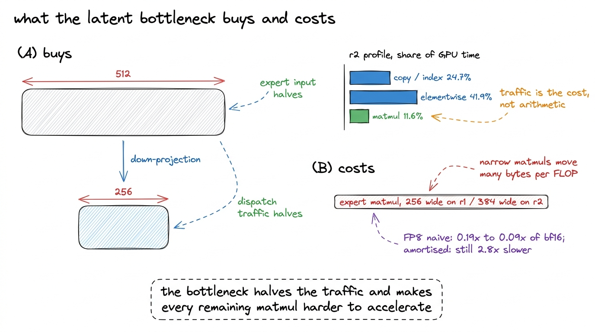
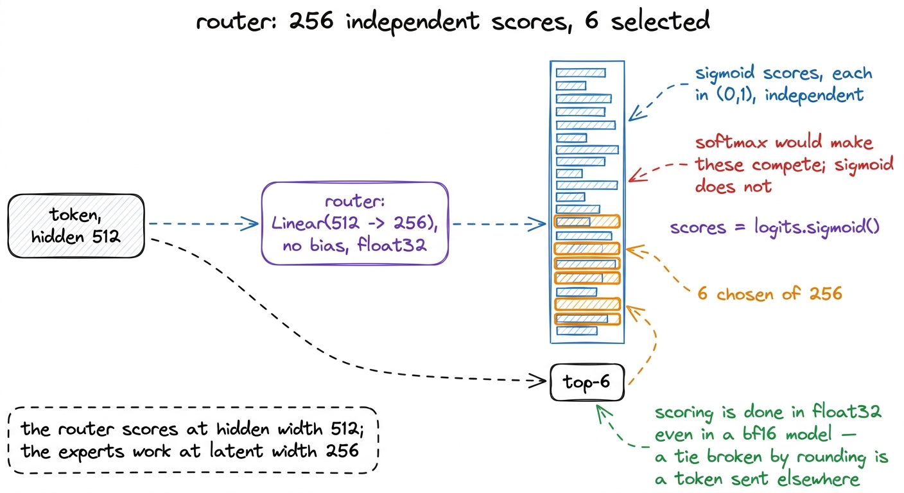
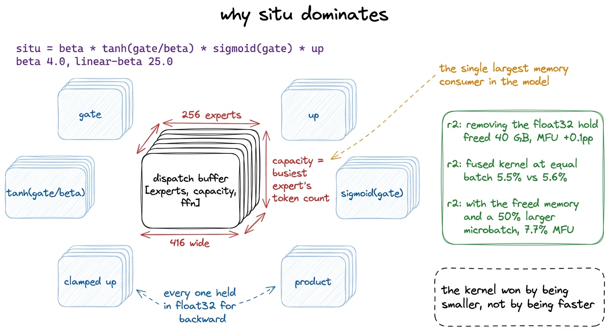
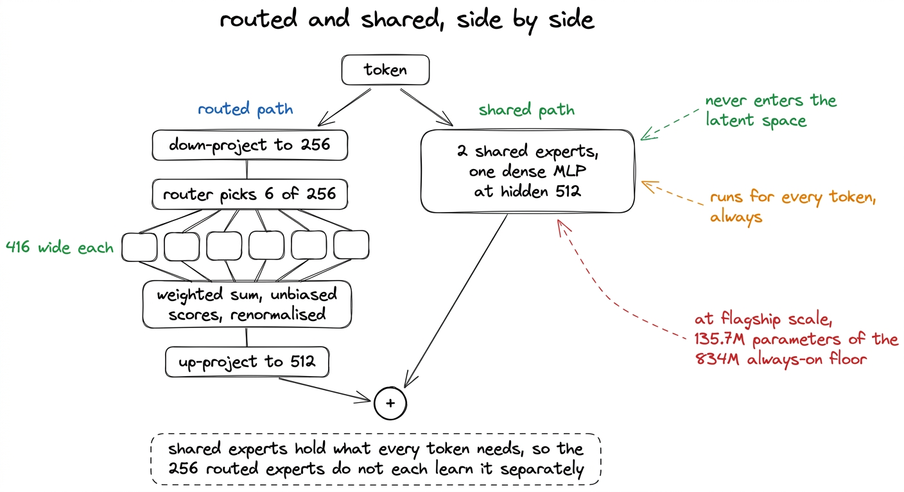
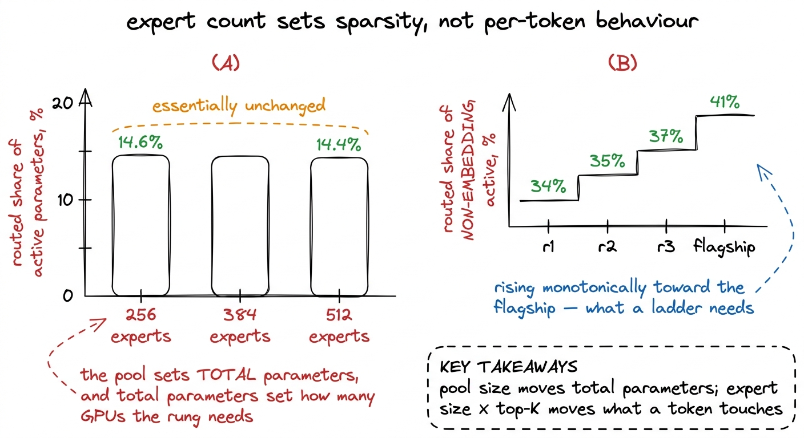

The mixture of experts that actually routes
256 experts, 6 active, 2 shared, a latent bottleneck at half the hidden size, and a sigmoid router with the aux-loss-free balancer K3 inherits from DeepSeek-V3.
r1 holds 1.02 billion parameters and spends 145 million of them on any given token. Almost the whole of that reduction happens in one block, repeated once per layer, and this chapter follows a single token through it in the order the token meets the parts.
The configuration is four numbers and two structural choices. 256 experts, 6 of them selected per token, 2 more applied to every token unconditionally, and each expert 416 units wide. The structural choices are that all of this happens in a latent space of 256 units rather than the model's 512-unit hidden space, and that selection is decided by a sigmoid router with the aux-loss-free correction bias K3 inherits from DeepSeek-V3. Every one of those settings is K3's own, scaled down by the ratios held fixed across the ladder.

figure rendering · The path a single token takes through one mixture-of-experts layer inThe latent bottleneck comes first
Before the router sees anything, the token is projected down. K3 calls the field routed_expert_hidden_size, and it sets the width the entire expert subsystem operates at. In K3 that value is 3,584 against a hidden size of 7,168. The ladder holds the same ratio, so r1 routes through 256 against its hidden size of 512.
"routed_expert_hidden_size": h // 2,That one line changes the cost of everything downstream. Each expert's input projection is 256 wide instead of 512, so every expert holds roughly half the parameters it would otherwise, for the same moe_intermediate_size. The token vectors that have to be sorted, gathered, packed into a dispatch buffer and gathered back are also half the size, which halves the bytes moved by the dispatch machinery. On a model this shape that second effect is the larger one: the profile taken on r2 shows copy and index operations at 24.7% of GPU time against matrix multiplication's 11.6%, so the traffic is not a rounding error against the arithmetic. It is roughly twice the arithmetic.
The cost is that the expert matmuls become narrow. A matmul 256 units wide moves a great many bytes per unit of arithmetic, which is precisely the regime the profile says the model is already stuck in.1 The block also carries an optional RMSNorm on the latent output, latent_moe_use_norm, enabled in our configuration and applied after recombination and before the up-projection. It never appeared as its own line in any profile we took. We paid for that choice with interest later. When FP8 was attempted on r2, the expert matmuls there are 384 wide, because r2's hidden size is 768 and the latent width is half of it, and they complete in tens of microseconds. Quantising the activations requires three passes over the input before the matmul begins, and three passes cannot be made cheaper than a matmul that finishes that fast. Naive FP8 measured 0.19x to 0.09x of bf16, and the properly amortised version was still 2.8x slower. The FP8 chapter is about that measurement, and the reason it went the way it did is written into the config line above.

figure rendering · The latent bottleneck cuts the data the dispatch has to move, and makeThe router scores every expert
The router is a single bias-free linear layer from the model's hidden size to the number of experts, run in float32, followed by a sigmoid. It reads the token at full width, not at the latent width, so it is scoring the token rather than the compressed representation the experts will see.
Sigmoid rather than softmax is K3's choice and we kept it. A softmax router produces scores that compete, since raising one expert's score lowers every other by construction. A sigmoid router produces 256 independent scores in (0, 1), and selection is a separate operation applied afterwards.
logits = F.linear(hidden_states.type(torch.float32),
self.weight.type(torch.float32), None)
scores = logits.sigmoid() # [tokens, 256]
scores_for_choice = scores + self.e_score_correction_bias.unsqueeze(0)
_, topk_idx = torch.topk(scores_for_choice, k=self.top_k, dim=-1, sorted=False)
topk_weight = scores.gather(1, topk_idx) # the UNBIASED scoresThree things in those five lines decide how the layer behaves.
The scores are computed in float32 regardless of the model's training dtype. Routing is a discrete decision made by comparing numbers that can sit very close together, and a tie broken by bf16 rounding is a token sent to a different expert.
Selection reads scores_for_choice, which is the score plus a per-expert scalar. That scalar is the noaux_tc correction bias, and it is the entire load-balancing mechanism. It is updated by rule after each optimizer step rather than by gradient, it is held out of the optimizer, and it steers which experts are chosen without ever changing how much a chosen expert contributes. It gets a chapter of its own, because twenty steps into the first real run 94.5% of experts were receiving zero tokens while the metric watching for exactly that read 0.99 out of 1.0, and the constant that fixed it is not the one in the paper it came from.
The weights are gathered from scores rather than from scores_for_choice, which is to say from the original, unbiased scores. This is the property that makes the balancer free. Load is steered by selection alone, and the objective is left alone.

figure rendering · The routing decision. The scores are independent by construction, andDispatch, and the shape it creates
Six expert indices per token is a scattered access pattern, and running 256 separate small matrix multiplies per layer is the wrong way to execute it on a GPU. The measurement that established this is in the MFU section: on r2, 256 experts across its 15 mixture-of-experts layers gave 3,840 sequential kernel launches per step, a count that does not depend on batch size at all, and step time at 2,048 tokens fell from 3.999 seconds to 0.228 seconds when the loop was replaced with three batched matrix multiplies.
What matters here is the shape that replacement creates. Tokens are sorted by expert and packed into a dense buffer of shape [experts, capacity, width], where capacity is the token count of the busiest expert. Padding is exact rather than lossy: unused slots hold zeros whose outputs are never gathered, so no token is dropped, unlike capacity-factor schemes that discard overflow. r1 has 12 layers of which layer 0 is dense, so 11 of them build this buffer on every forward pass.2 first_k_dense_replace: 1 makes layer 0 a conventional dense MLP at intermediate_size rather than a mixture-of-experts block. K3 does the same thing. The routed layers therefore see a representation that has already been through one non-routed transformation.
The buffer is also where the model's memory goes, and the reason is the activation applied inside it.
situ, and why it dominates memory
K3's activation function is registered under the name situ. It is a gated feed-forward activation like SwiGLU, with two constants and a soft clamp:
def forward(self, x):
d = x.shape[-1] // 2
gate = x[..., :d].to(torch.float32)
up = x[..., d:].to(torch.float32)
situ_a = self.beta * torch.tanh(gate / self.beta) * torch.sigmoid(gate)
if self.linear_beta is not None:
up = self.linear_beta * torch.tanh(up / self.linear_beta)
return (situ_a * up).to(x.dtype)Read it left to right. beta * tanh(gate / beta) is the identity for small values and saturates at ±beta, so it is a smooth clamp with a knob. Multiplying by sigmoid(gate) gives the swish-like shape that gated activations use. The up path is separately clamped at ±linear_beta. Our constants are beta 4.0 and linear-beta 25.0, which are K3's published values, unchanged. We did not sweep them and we did not measure an alternative; the ladder's premise is that r1 differs from K3 in scale and not in kind, and an activation constant is exactly the sort of thing that quietly makes a replica into something else.
The line that costs money is .to(torch.float32). The released implementation upcasts both halves and materialises a chain of intermediates — the two inputs, the tanh, the sigmoid, the clamped up, the products — every one of them held for the backward pass. Inside the dispatch buffer those intermediates have shape [experts, capacity, ffn], in float32, and they are the single largest memory consumer in the model.
Two later chapters exist because of that shape. Removing the float32 hold entirely was attempt 5 of the MFU investigation and freed 40 GB on r2 while moving MFU by 0.1 percentage points, which looked like a failure at the time. Fusing situ into one Triton kernel was attempt 8, and at equal batch size it was not faster either: 5.5% MFU against the released path's 5.6%. It won anyway, because the 40 GB it freed allowed a 50% larger microbatch, and the larger microbatch took r2 from 5.6% to 7.7% MFU at 41,294 tokens per second. The kernel won by being smaller rather than quicker, and the reason a small kernel could be worth 1.38x is that the tensor it eliminated was the one setting the batch size.3 Both figures were measured on r2, the rung above r1, on a single H200. r1 fits comfortably on one card at 92.5 GB in the benchmark harness, so the memory pressure that made these attempts worth running is real for the ladder rather than for the run this book reports.

figure rendering · The activation's float32 intermediates, replicated across the padded eRecombination, and back up to hidden width
The six expert outputs are combined by a weighted sum, the weights being the unbiased sigmoid scores, renormalised to sum to one.
y = (y.view(n_tok, k, -1).type(topk_weight.dtype)
* topk_weight.unsqueeze(-1)).sum(dim=1).type(hidden_states.dtype)
if self.use_latent_moe:
if self.latent_moe_use_norm:
y = self.routed_expert_norm(y)
y = self.routed_expert_up_proj(y)
y = y.view(*orig_shape)
if self.config.num_shared_experts is not None:
y = y + self.shared_experts(identity)
return yThe renormalisation matters more with a sigmoid router than it would with a softmax one. Sigmoid scores do not sum to anything in particular, so without renormalisation the total magnitude of the block's output would depend on how confident the router happened to be about this token, and that confidence changes over training. Dividing by the sum of the six selected scores removes that dependence.4 routed_scaling_factor is 1.0 in our configuration, so the multiplication by it after renormalisation is inert. It exists in K3's gate as a knob for models that want the routed path scaled relative to the shared path. Our num_expert_group is also 1, which makes the group-limited routing branch of the released gate — the part that restricts each token to a subset of expert groups before top-k — unreachable code for every rung on the ladder.
Then the latent up-projection returns the result to 512 units, and the shared experts are added. Note the argument: self.shared_experts(identity), where identity is the block's input at full hidden width. The shared experts never enter the latent space at all. They are a conventional dense MLP running at the model's hidden size, applied to every token, in parallel with the routed path.
The two experts every token gets
Two shared experts run unconditionally, and their width is the routed expert width multiplied by the shared count, so they are a single MLP twice the width of one routed expert.
The argument for them is about what a routed expert should be asked to learn. Language has structure that every token needs, and if that work is left to the routed pool then all 256 experts must learn it independently, which duplicates the same parameters 256 times and leaves each expert less capacity for whatever it is uniquely good at. A shared expert holds it once.
There is a second effect that matters more during training than at convergence. The shared path is always active, so gradient always flows through it. When the router collapses early in training, and it does in every run we measured, the shared experts continue to receive the full gradient signal for every token, so the block is never producing nothing useful while the balancer pulls the routed pool back. The healthy trajectory reaches somewhere between 69% and 95% dead experts in the first thirty or so steps and then recovers; our completed run read 0.0% dead experts and imbalance 2.36 at step 0, and ended at step 38,140 with 0.0% dead experts and load imbalance 4.0. We did not run an ablation without shared experts, so this reasoning is an argument for the design rather than a measurement of it.
At flagship scale the shared experts are 135.7M parameters of the 834M always-on floor, the third-largest always-on cost in the model after KDA and the tied embedding. They are not a small addition.

figure rendering · The routed and shared paths run in parallel and are summed. Only the rThe deviation: 256 experts, not 512
r1, r2 and r3 all use 256 experts. The flagship the ladder was built to price uses 512. This is a deliberate deviation and it is worth stating why it does not compromise what the ladder measures.
Routed active parameters are per-expert size multiplied by top-k multiplied by layers. That product does not contain the expert count. Total parameters, however, scale linearly with the pool. So halving the pool halves total parameters, and therefore halves optimizer state and memory, while leaving the number of parameters a token actually touches essentially unchanged.
We measured it rather than asserting it. Holding everything else fixed and varying the pool across 256, 384 and 512 experts moved the routed share of active parameters from 14.6% to 14.4%. That is the entire effect. Expert count sets sparsity; expert size and top-k set routed share.
The practical consequence is that halving the pool kept each rung on a single card. r1 and r2 both ran on one H200; r3 needed a B200, since it went out of memory on an H200 in the benchmark harness. A ladder that needs several GPUs per rung to measure single-GPU throughput is not a ladder.
What the deviation does change is sparsity, the ratio of total to active parameters, and we report it rather than hiding it. The routed share of non-embedding active parameters rises monotonically along the ladder — 34% at r1, 35% at r2, 37% at r3, 41% at the flagship — which is the shape a ladder needs, but it does not reach the flagship's value at the bottom rung. The gap is the embedding tax rather than the expert count: at hidden 512 the 163,840-token embedding is 58% of active parameters, and no arrangement of experts can move that.

figure rendering · The measurement that licensed running the ladder at 256 experts againsWhat the block is, summarised
For every token, in every one of r1's eleven mixture-of-experts layers: project 512 down to 256, score all 256 experts with a sigmoid in float32, add the correction bias and take the top 6, pack the tokens into a padded [256, capacity, 416] buffer, apply three batched matrix multiplies with situ between them in float32, gather back, weight by the six unbiased renormalised scores, project 256 back up to 512, and add the output of two shared experts that never left full width.
The parts that were K3's and stayed K3's are the sigmoid router, noaux_tc, the half-hidden latent width, the two shared experts, top-6, and both situ constants. The part that is ours is the pool size, and the measurement above is why that was allowed. The parts that cost us the most engineering are not the ones that look expensive: the dispatch loop and the activation's float32 intermediates account for more of this book's MFU section than the expert matmuls they surround.